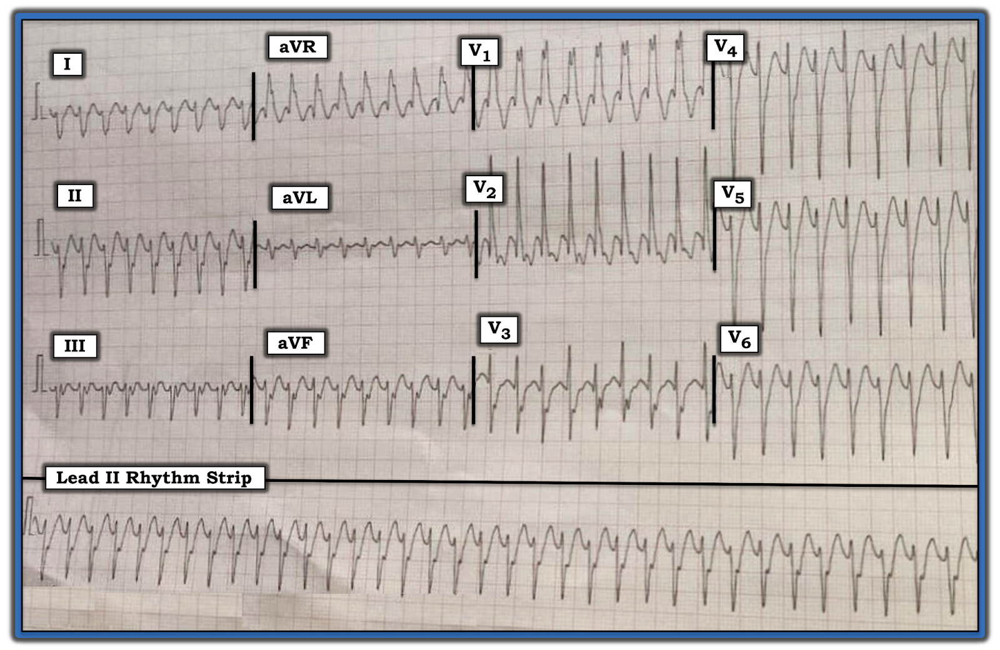
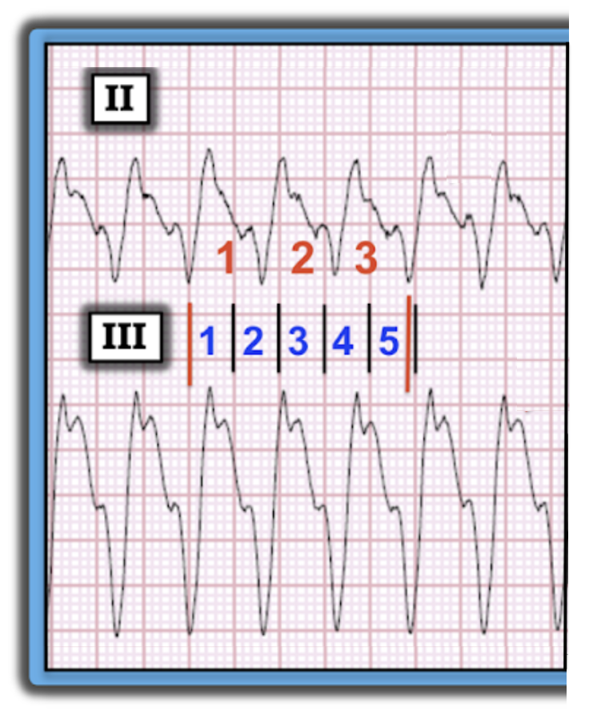
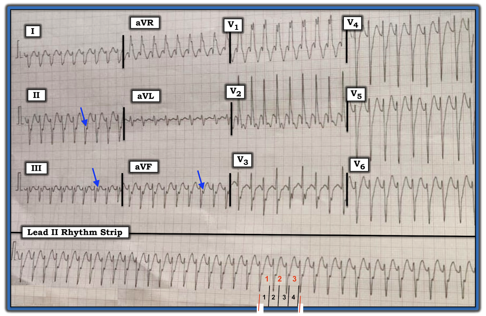
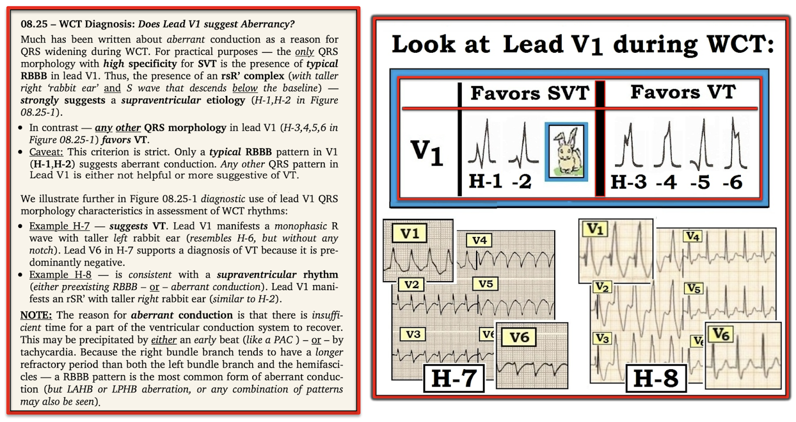

ECG Blog #210 — Một nhịp WCT: Tần số nhanh đến mức nào?
Điện tâm đồ ở Hình-1 được ghi từ một nam giới 30 tuổi bị hồi hộp đánh trống ngực. Bệnh nhân ổn định huyết động vào thời điểm ghi bản ghi này.
- Nhịp này LÀ GÌ? — Đây là VT hay SVT?


=======================================
LƯU Ý #1: Trước khi đi vào phân tích case này — tôi muốn ôn lại một phương pháp nhanh và chính xác để ước tính tần số tim khi nhịp nhanh.
=======================================
ECG Media PEARL #27 (Video 3:00 phút) hôm nay — Ôn lại Quy tắc 300 để ước tính tần số tim — và — tại phút 1:25 của video, Phương pháp Cách-Một-Nhát để Ước tính Tần số với các nhịp nhanh.
- LƯU Ý #2: Đôi khi, thay vì đánh giá khoảng R-R cách-một-nhát, việc đánh giá khoảng R-R của mỗi-ba- hoặc mỗi-bốn- nhát lại dễ hơn. Chúng tôi minh họa điều này ở Hình-2.


Tần số NHANH đến mức nào ở Hình-2?
Nhìn mỗi-ba-nhát là dễ nhất trong ví dụ này — vì tôi tìm được một đoạn 3 nhát trong nhịp mà một phần của QRS ở đầu và ở cuối đều rơi đúng trên (hoặc gần như trên) một đường lưới đậm (như 2 đường thẳng đứng MÀU ĐỎ ở Hình-2).
- Trước tiên tôi chọn một phần dễ nhận ra của phức bộ QRS bắt đầu trên một đường đậm. Ở Hình-2 — tôi chọn nhát thứ 2 ở chuyển đạo II (Xem đường thẳng đứng MÀU ĐỎ thứ 1 dưới nhát này). Dùng Phương pháp Mỗi-Ba-Nhát — thời gian cần để ghi 3 nhát (các số MÀU ĐỎ ở chuyển đạo II) là gần 5 ô lớn (các số MÀU XANH trong Hình này). Vì vậy — MỘT PHẦN BA tần số thì nhanh hơn 300/5 một chút ~60-65/phút.
- Vì vậy — tần số thực của nhịp ở Hình-2 là ~60-65 X 3 ~185-190/phút.
ĐIỂM THEN CHỐT (PEARL) #1: Biết tần số thực của một nhịp nhanh có thể cực kỳ hữu ích khi phân tích chẩn đoán phân biệt của nhịp. Điều này đặc biệt đúng với các nhịp SVT (nhịp nhanh trên thất – SupraVentricular Tachycardia) vì:
- Dù không phải là không thể — Nhịp nhanh xoang trở nên ít khả năng hơn nhiều ở người lớn không gắng sức NẾU tần số của nhịp nhanh chưa rõ vượt quá ~170/phút.
- Cuồng nhĩ (AFlutter) chưa điều trị thường gặp nhất với tần số thất gần 150/phút (khoảng ~135-165/phút). Đó là vì tần số cuồng chưa điều trị trong nhĩ ở người lớn thường gần 300/phút — với dẫn truyền AV 2:1 sẽ cho tần số thất gần ~150/phút. Vì vậy — cuồng nhĩ cũng trở nên ít khả năng khi tần số của một nhịp SVT chưa rõ vượt quá ~170/phút (vì khi đó sẽ cần tần số thất trên 340/phút nếu vẫn duy trì dẫn truyền AV 2:1).
- Ngược lại, một nhịp SVT có tần số thất trong khoảng ~140-150/phút KHÔNG cho Manh mối nào về nguyên nhân — vì mỗi khả năng chẩn đoán thường gặp nhất (tức là Nhịp nhanh xoang — ATach — Cuồng nhĩ — AVNRT/AVRT) đều có thể biểu hiện với tần số thất trong khoảng ~140-150/phút.
=======================================
— Quay lại với Case hôm nay —
=======================================
CÁCH TIẾP CẬN CỦA TÔI với Nhịp ở Hình-1:
Tiếc là điện tâm đồ 12 chuyển đạo kèm dải nhịp DII dài ở Hình-1 “có vấn đề kỹ thuật” (tức là bị nghiêng). Dù vậy — tôi tin chất lượng bản ghi này vẫn đủ để đánh giá nhịp chính xác. Theo “Cách tiếp cận Ps, Qs & 3R” mà tôi ưa dùng (Đã ôn lại trong ECG Blog #185):
- Phức bộ QRS rộng (rõ ràng hơn 3 ô nhỏ = thời gian >0.12 giây).
- Sóng P xoang bình thường không có (tức là KHÔNG có dấu hiệu rõ của sóng P dương ở chuyển đạo II — Xem Điểm then chốt #2 bên dưới).
- Do đó không có sóng P xoang nào có thể Liên quan (Related) với các phức bộ QRS kế cận.
- Nhịp Đều (Regular) (tức là dù bản ghi bị nghiêng — phức bộ QRS vẫn đều suốt dải nhịp DII dài).
Cuối cùng, về Thông số thứ 5 trong Cách tiếp cận Ps, Qs & 3R — tôi ước tính Tần số (Rate) của nhịp ở Hình-1 là ~210/phút.
- Để ước tính — tôi dùng Phương pháp Mỗi-Ba-Nhát (Hình-3). Tôi bắt đầu bằng cách chọn một phức bộ QRS có điểm âm sâu của QRS rơi đúng trên một đường lưới đậm (Xem đường thẳng đứng MÀU ĐỎ thứ 1 ở DII dài dưới nhát này).
- Thời gian cần để ghi 3 nhát (các số MÀU ĐỎ ở DII dài) là hơn 4 ô lớn (các số MÀU ĐEN ở Hình-3) một chút. Vì vậy — MỘT PHẦN BA tần số thì chậm hơn 300/4 một chút ~70/phút.
- Vì vậy — tần số thực của nhịp ở Hình-3 là ~70 X 3 ~210/phút.
ĐIỂM THEN CHỐT (PEARL) #2: Tôi không thể loại trừ khả năng sóng lệch âm thấy ở cả 3 chuyển đạo dưới ở cuối phức bộ QRS trong Hình-3 (mũi tên MÀU XANH) có thể là hoạt động nhĩ ngược dòng. Dù vậy, ngay cả NẾU đây là dẫn truyền thất-nhĩ (VA) ngược dòng 1:1 — điều này cũng không giúp ích cho chẩn đoán, vì cả VT lẫn các nhịp SVT vào lại đều có thể biểu hiện dẫn truyền VA 1:1.
- Sau khi chuyển về nhịp xoang — chúng ta sẽ biết được LIỆU sóng lệch âm này có thực sự là hoạt động nhĩ ngược dòng hay không (NẾU đúng — thì sóng lệch âm được đánh dấu bằng mũi tên MÀU XANH ở Hình-3 sẽ không còn nữa khi sóng P xoang trở lại).


Tổng hợp lại:
Theo Cách tiếp cận Ps, Qs & 3R — chúng ta đã xác định một Nhịp WCT đều (nhịp nhanh QRS rộng – Wide-Complex Tachycardia) tần số ~210/phút, không có dấu hiệu rõ của sóng P xoang.
- Việc bệnh nhân là người trẻ tuổi (tức là nam giới 30 tuổi) — không loại trừ khả năng VT. Như đã bàn chi tiết trong ECG Blog #197 — một dạng nào đó của VT vô căn (tức là VT ở bệnh nhân không có bệnh tim nền) thường gặp hơn ở người trẻ so với ta thường nghĩ — đặc biệt khi nhịp WCT đều khởi phát trong lúc gắng sức.
- “Tin tốt” — là: i) Diễn tiến chung và tiên lượng (cả ngắn hạn lẫn dài hạn) của VT vô căn thường tốt hơn nhiều so với VT do thiếu máu cục bộ; và, ii) Điều trị ban đầu (bằng Adenosine hoặc Verapamil/Diltiazem — tùy theo loại VT vô căn, như đã bàn trong Blog #197) thường thành công trong việc chuyển nhịp WCT, bất kể nguyên nhân là VT vô căn hay một dạng SVT nào đó có dẫn truyền lệch hướng.
- Dẫn truyền lệch hướng thường biểu hiện hình dạng QRS điển hình cho một dạng blốc dẫn truyền đã biết nào đó — hoặc RBBB, LABB; một trong các blốc phân nhánh (tức là LAHB, LPHB) — hoặc blốc hai phân nhánh (tức là RBBB/LAHB hoặc RBBB/LPHB).
ĐIỂM THEN CHỐT (PEARL) #3: NẾU hình dạng QRS trong nhịp WCT hoàn toàn điển hình cho một dạng blốc dẫn truyền đã biết nào đó — điều này nghiêng mạnh về nguyên nhân trên thất. Ngược lại, NẾU hình dạng QRS trong nhịp WCT rõ ràng không điển hình cho bất kỳ dạng blốc dẫn truyền đã biết nào — điều này nghiêng về VT.
- Dù vậy — Ngoại lệ luôn tồn tại. Không gì là 100%. Ví dụ — các nhịp SVT có thể biểu hiện hình dạng QRS cực kỳ không điển hình trong một WCT nếu điện tâm đồ nền của bệnh nhân cũng có đúng hình dạng QRS rất không điển hình đó (như có thể gặp nếu bệnh nhân có bệnh tim thiếu máu cục bộ nền nặng, bệnh tim bẩm sinh, bệnh cơ tim, v.v.). Ngoài ra, một số dạng VT có thể giống các rối loạn dẫn truyền đã biết NẾU nhịp thất khởi phát gần (hoặc đi qua) một hay nhiều phân nhánh dẫn truyền. Điểm MẤU CHỐT: Dù có những ngoại lệ có thể xảy ra — tôi thấy việc đánh giá hình dạng QRS trong nhịp WCT cực kỳ hữu ích để dự đoán nguyên nhân khả dĩ của nhịp.
- LƯU Ý: Để ôn lại hình dạng QRS kỳ vọng của các blốc nhánh, các blốc phân nhánh và blốc hai phân nhánh — Vui lòng XEM ECG Blog #203 và Blog #204.
Về Hình dạng QRS ở Hình-3:
Hình dạng QRS của nhịp WCT đều ở Hình-3 giống RBBB — vì có phức bộ QRS rộng, dương ưu thế ở chuyển đạo V1 — với sóng S tận rộng ở các chuyển đạo bên I và V6. Dù vậy — có một số đặc điểm không điển hình mà theo tôi gợi ý mạnh rằng nhịp này nhiều khả năng là một dạng VT phân nhánh (fascicular VT). Các đặc điểm không điển hình về hình dạng QRS gồm:
- Mặc dù hình dạng QRS ở chuyển đạo V1 của Hình-3 rộng và dương ưu thế — lại không có sóng r khởi đầu và, sóng R’ vừa rất rộng vừa có khía (trong khi với hình dạng RBBB điển hình — sóng R’ thường mảnh hơn và không có khía).
- Có sóng Q ở thành trước (thấy ở đây tại các chuyển đạo V1 và V2) — trong khi điều này thường không gặp với hình dạng RBBB điển hình trừ khi đã có nhồi máu thành trước trước đó (điều rõ ràng ít có khả năng xảy ra ở một người 30 tuổi trước đó khỏe mạnh).
- Trục mặt phẳng trán là không xác định (tức là âm ưu thế ở các chuyển đạo I, II và III). Không blốc phân nhánh nào thường biểu hiện âm ưu thế ở cả 3 chuyển đạo chi chuẩn (trong khi hình ảnh này không hiếm gặp với VT phân nhánh).
- ĐIỀU CỐT LÕI: Vào thời điểm viết bài này, tôi chưa có thông tin theo dõi của case — nên tôi chưa có câu trả lời xác định. Dù vậy — vì bệnh nhân là một nam giới 30 tuổi được cho là trước đó khỏe mạnh (do đó ít khả năng có điện tâm đồ nền với RBBB có sẵn mang hình dạng QRS không điển hình) — tôi cho rằng nhịp trên điện tâm đồ ở Hình-3 nhiều khả năng nhất là VT phân nhánh. Tôi sẽ điều trị bệnh nhân theo hướng đó (tức là thử trước bằng Verapamil tĩnh mạch (IV), vì bệnh nhân ổn định huyết động).


-------------------------------------------------------------------------
Lời cảm ơn: Xin cảm ơn Anil Kumar Kolli và Mohan Prasad (từ Pradesh, Ấn Độ) đã chia sẻ case và bản ghi này.
-------------------------------------------------------------------------
==============================
Các bài ECG Blog liên quan đến Case hôm nay:
- ECG Blog #185 — Ôn lại Cách tiếp cận hệ thống của tôi để đọc nhịp theo “Cách tiếp cận Ps, Qs & 3R”.
- ECG Blog #196 — Ôn lại cách tiếp cận của tôi với WCT đều.
- ECG Blog #197 — Ôn lại chẩn đoán điện tâm đồ VT vô căn (bao gồm VT đường ra thất phải (RVOT VT) và VT phân nhánh (Fascicular VT)).
- ECG Blog #203 — Ôn lại hình dạng QRS kỳ vọng của các Blốc phân nhánh và Blốc hai phân nhánh (tức là LAHB, LPHB; RBBB/LAHB; RBBB/LPHB).
- ECG Blog #204 — Ôn lại hình dạng QRS kỳ vọng của Blốc nhánh (tức là RBBB, LBBB, IVCD).